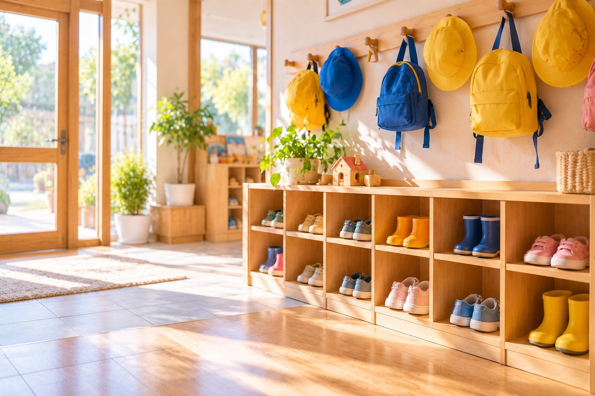
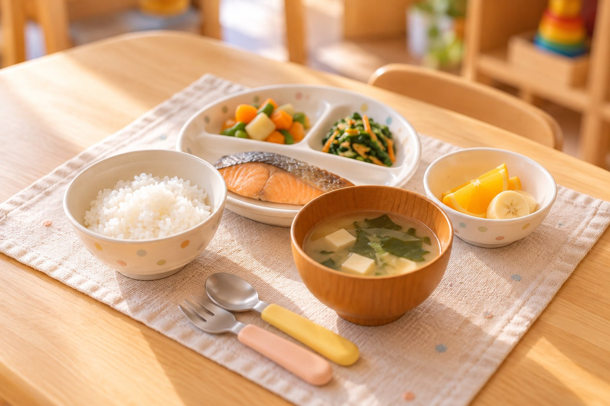

朝も夕方も頼れる保育

園ごとの開所時間をご案内します。ご家庭のはたらき方に合わせてお預かりします。
開所時間を見る朝も夕方も、体調をくずした日も。
はたらくご家庭のとなりで、こどもの一日をあずかります。
入園時期がまだ決まっていない方も
ご相談いただけます
入園案内・保育料
病児保育のご案内
2つの園をご紹介

こどもたちが、自分でやってみたいと思える気持ちを大切に。
一人ひとりのペースで育つ姿を見守ります。
あそびや生活のなかで見つかる小さな「できた」を、
ご家庭といっしょに喜び合える保育をめざしています。
園ごとの開所時間をご案内します。ご家庭のはたらき方に合わせてお預かりします。
開所時間を見る
併設の病児保育室で、体調不良時もご相談いただけます。
病児保育のご案内
ご家庭のことばや文化に配慮したコミュニケーションを大切にしています。
多言語での取り組みを見るそれぞれの園の特徴や、開所時間をご紹介します。

イメージ写真イメージ写真あそび・食事・休息のバランスを大切に、
こどもたちの健やかな毎日をつくります。
自然や人との関わりのなかで、こころとからだを育てます。

給食もおやつも自園調理。食べる楽しさを大切にしています。
一人ひとりのリズムに合わせて、ゆっくり休息をとります。